China Employee Termination in 2026: Pulse Governance-Kanban Brief for Foreign Employers
Key takeaways
- Foreign employers can reduce China termination failures by managing cases as a governance flow, not isolated tasks.
- A Kanban-style model makes blockers visible early: route uncertainty, payroll drift, script lag, and closure backlog.
- Work-in-progress (WIP) limits help prevent rushed communication on unstable cases.
- Queue aging is a risk signal; older blocked items often become expensive reversals.
- This Pulse brief is impact-first, with legal depth in a secondary appendix.
What changed and why this matters now
Many teams have the right controls on paper but fail in execution because too many cases move at once. When queues are overloaded, teams skip quality gates, handoffs degrade, and risk accumulates silently. By the time leadership notices, the cost of correction is much higher.
This run rotates to a governance-Kanban format. It helps foreign operators control flow, reduce hidden backlog risk, and keep legal/payroll/communication dependencies synchronized.
Plain-language legal context first
China termination execution must remain consistent across legal route, factual record, payout treatment, and communication. If any layer moves ahead while another is unresolved, dispute exposure increases.
Because local implementation can vary by city, governance flow should include locality-sensitive checks before items leave key control stages.
Kanban governance lanes for termination operations
Lane 1 — Intake and route validation
Purpose: classify case, confirm route assumptions, record locality notes.
Exit criteria: route confidence documented and contradiction status clear.
Common blocker: unresolved fact conflict.
Lane 2 — Evidence and payroll lock
Purpose: finalize evidence package and payout/IIT assumptions as one locked baseline.
Exit criteria: single worksheet version, legal/payroll sign-off, no open component disputes.
Common blocker: multiple worksheet drafts or unclear tax assumptions.
Lane 3 — Communication readiness
Purpose: align scripts with current route and payout baseline.
Exit criteria: current script pack, spokesperson assignment, escalation language approved.
Common blocker: script version lag behind payroll updates.
Lane 4 — Execution and closure
Purpose: complete payment, archive final records, and validate retrieval readiness.
Exit criteria: closure memo, indexed archive, retrieval test pass.
Common blocker: closure backlog after execution rush.
WIP limits and queue-aging rules
Set WIP caps per lane (example: max 5 active items in Lane 2). When WIP exceeds limit, pause new intake and clear blockers first. This prevents overload-driven errors.
Set queue-aging thresholds (example: blocked >48 hours in Lane 2 requires escalation). Aged blockers should be treated as risk events, not normal delays.
Why this format works for foreign employers
Foreign teams often face distributed approvals and competing priorities. A Kanban view makes risk tangible: teams can see where work is stuck and why. It also improves executive decision quality by showing flow health, not just completion counts.
Most importantly, it reduces “false progress.” Cases only move forward when exit criteria are met, not when calendar pressure rises.
Practical scenarios
Scenario A: Lane 2 overload before payroll cycle
Too many cases enter evidence/payroll lock simultaneously.
Flow signal: WIP breach.
Action: enforce intake pause, prioritize aged blockers, and protect quality gates.
Scenario B: Lane 3 starts with stale inputs
Communication prep begins while Lane 2 assumptions are still changing.
Flow signal: dependency violation.
Action: return item to Lane 2 and re-open only after lock confirmation.
Scenario C: Lane 4 backlog after busy week
Cases marked executed but closure artifacts incomplete.
Flow signal: closure aging spike.
Action: run closure sprint and block final status until retrieval tests pass.
Daily operations SOP (role ownership)
Flow manager (HR Ops/PMO): monitors WIP, blocker aging, and lane dependency integrity.
Legal owner: certifies Lane 1 route and locality assumptions.
Payroll owner: certifies Lane 2 worksheet integrity and IIT assumptions.
Comms owner: certifies Lane 3 script alignment and briefing completion.
Closure owner: certifies Lane 4 retrieval readiness and archive quality.
Document checklist and flow gates
- Lane 1: route memo + contradiction log + locality note
- Lane 2: evidence pack + vFinal worksheet + IIT memo + approvals
- Lane 3: script pack + version links + spokesperson/escalation notes
- Lane 4: payment proof + closure memo + archive index + retrieval log
Exception handling playbook
- WIP cap breach: freeze new items into overloaded lane.
- Aging threshold breach: escalate to flow manager and assign unblock owner.
- Dependency violation: auto-return item to upstream lane.
- Repeated same blocker type: trigger root-cause review and SOP update.
System implementation notes
In workflow tools, configure lane states, WIP caps, dependency checks, and blocker timers. Add automatic alerts for aging items and dependency breaches. Link communication task permissions to Lane 2 completion status.
Track weekly KPIs: WIP breach count, average blocker age, dependency violation rate, post-communication correction rate, and closure retrieval pass rate.
Common mistakes and prevention
- Mistake: optimizing speed by overloading lanes.
Prevention: enforce WIP caps.
- Mistake: treating blocker age as administrative issue.
Prevention: age-triggered escalation rules.
- Mistake: allowing downstream work on unstable inputs.
Prevention: strict dependency gating.
- Mistake: weak closure discipline under volume pressure.
Prevention: lane 4 exit criteria with retrieval test.
What to do now
Deploy a four-lane Kanban board for active China termination matters this week. Start with conservative WIP limits and one aging alert threshold per lane. Review only blockers and dependency violations in daily stand-ups.
At leadership level, track three metrics first: WIP breaches, aged blockers, and post-communication corrections. This gives an early warning system for preventable dispute risk.
What to watch next
- Whether Lane 2 remains the primary bottleneck.
- Whether dependency violations decrease after gating rules are enforced.
- Whether closure backlog and retrieval failures trend down.
7-day Kanban stabilization plan
Day 1-2: Baseline the board. Map all active cases to the four lanes and capture current WIP, blocker age, and dependency violations. Do not optimize yet; this baseline is the reference point for every future improvement discussion.
Day 3-4: Enforce hard gates. Activate two immediate controls: (1) communication lane cannot start without a locked payroll lane item, and (2) any blocker older than 48 hours requires named escalation ownership. This usually removes silent drift quickly.
Day 5: Reduce WIP pressure. Apply temporary intake throttling to lanes above cap and clear aged blockers first. This protects quality and reduces rework.
Day 6-7: Review outcomes and recalibrate. Compare before/after metrics on WIP breaches, blocker aging, and post-communication corrections. Then adjust lane caps and escalation SLAs for the next cycle.
FAQ
1) Why use Kanban governance for legal/payroll processes?
It makes hidden queue risk visible and actionable.
2) Are WIP limits too rigid for urgent cases?
Urgent cases can be expedited, but should be explicit exceptions, not the norm.
3) Which lane usually drives most late-stage failures?
Lane 2 (evidence/payroll lock) is often the highest-risk lane.
4) How often should blocker aging be reviewed?
Daily for active queues; weekly for trend analysis.
5) Is this legal advice?
No. It is an operational governance framework and not legal/tax advice.
6) What KPI improves first when this works?
Dependency violation rate usually drops early.
Legal depth appendix (secondary)
This brief is anchored in the PRC Labor Contract Law baseline and supplemented by practitioner and payroll references used by multinational employers. It provides operational governance guidance and does not replace legal advice. Material decisions should be validated with qualified local legal and tax advisors.
Soft CTA
If your team needs compliance-first support for China employee termination, China-Payroll.com can help implement flow governance, payroll lock controls, and defensible closure standards.
Disclaimer
This content is informational only and does not constitute legal, tax, or employment advice.
Sources
- National People’s Congress of China, Labor Contract Law of the PRC (English), accessed 2026-03-07: http://www.npc.gov.cn/zgrdw/englishnpc/Law/2007-12/13/content_1384064.htm
- ICLG, Employment & Labour Laws and Regulations: China, accessed 2026-03-07: https://iclg.com/practice-areas/employment-and-labour-laws-and-regulations/china
- Littler, Key Recent Developments in China’s Employment Law, accessed 2026-03-07: https://www.littler.com/news-analysis/asap/key-recent-developments-chinas-employment-law-china-us-comparative-perspective
- PwC Tax Summaries, China Individual — Taxes on Personal Income, accessed 2026-03-07: https://taxsummaries.pwc.com/peoples-republic-of-china/individual/taxes-on-personal-income
- China Briefing, China Human Resources and Payroll Guide, accessed 2026-03-07: https://www.china-briefing.com/doing-business-guide/china/human-resources-and-payroll
Need local employment support in China?
If you need a compliance-first partner for hiring, payroll, and risk controls in China, China-Payroll.com can help evaluate the right setup.
Image Prompt Pack
Create a 16:9 hero image for article title: 'China Employee Termination in 2026: Pulse Governance-Kanban Brief for Foreign Employers'. Scene: global operations team evaluating workforce model options for China market entry. Include motifs: decision matrix, org…